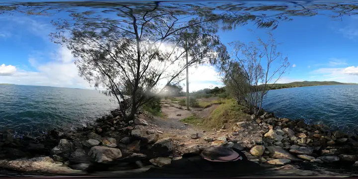

Level A: phone and 360 photos
Current layer. Good for visual orientation, prompt seeds, public memory and identifying questions.
The next step is a data ladder: better capture, better reconstruction, better public review, and better requests for official source files.

Current layer. Good for visual orientation, prompt seeds, public memory and identifying questions.
Next layer. Useful for current layout, rooflines, circulation, vegetation and construction-impact discussion. Must follow CASA rules and local permissions.
Use overlapping photos/video to reconstruct a navigable space. Good for world builders and visual review, less reliable for hard measurement unless controlled carefully.
Use official/open LiDAR or commissioned scans for terrain, levels, surfaces, clearance, drainage, vegetation and engineering discussions.
Publish safe source files, licence, coordinate system, capture dates, accuracy notes, derived meshes, issue logs and community simulations.
Before flying, check CASA rules, airspace, people, roads, privacy, permissions, wildlife, cultural sensitivity, weather and whether the capture is recreational, volunteer, paid or organisational work. When in doubt, get a qualified drone operator.
Use CASA as the authority for drone rules, registration and operator requirements.
Open CASA drones pageCASA points people to verified apps to check where they can and cannot fly.
Check CASA guidanceRecord date, time, operator, purpose, weather, area, permissions, files captured and what should not be published.
Open capture templateELVIS helps discover and obtain Australian elevation and bathymetry data from participating government agencies.
Open elevation data pageQueensland publishes open datasets and data request pathways, including spatial data routes.
Open Queensland data portalQueensland’s spatial data pathway for mapping data, imagery and related downloads.
Open QSpatial